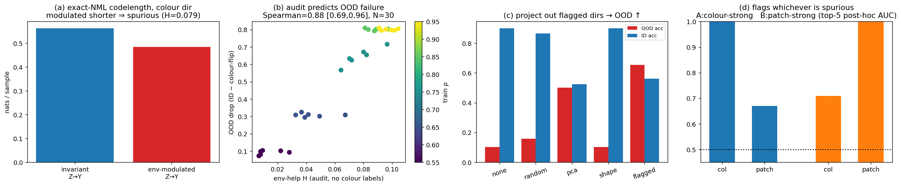

MDL / NMLspurious-correlationColoredMNIST
Preliminary code for a University of Tokyo research proposal —
広域システム科学系, Prof. Shin Matsushima.
· GitHub repo
Extend NML/MDL latent-common-cause detection (CLOUD; Kobayashi–Miyaguchi–Matsushima, 2024)
from raw variables to the learned concept directions of a frozen deep encoder.
For a representation Z, label Y, and environment indicator
E, a two-part-MDL codelength selects, per concept direction, among:
| model | meaning |
|---|---|
z ⊥ Y | no label information |
z | Y | label relation shared across environments → robust |
z | Y,E | label relation modulated by environment → spurious |
Shortest codelength wins — no tuned threshold.

pip install modal && modal token new modal run modal_nml_audit_v2.py --full # ColoredMNIST, 30 CNNs, ~15 min on one GPU
The audit detects environment-dependent shortcut directions under specified NML model classes, predicts OOD degradation, and enables a simple projection-based mitigation. It is not a general causal-discovery guarantee, and it analyses observed-environment structure (CLOUD-style), not an exact hidden-latent solver.